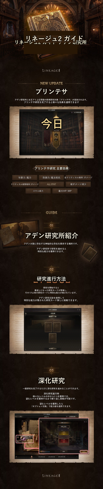

韓国公式の開発者ノート（画像の読み取り） 2026-06-24
機械翻訳／ 2026-09-29 19:00 時点
ガイド - アデン研究所
原題：가이드 - 아덴 연구소（韓国公式の開発者ノート、2026-06-24）
本文が画像だけの記事です。画像の文字を、文字認識とAIで読み取って日本語に置き換えた非公式の翻訳画像です。元の画像の権利は NCSOFT にあります。読み取りの誤り・消し残しがあり得るので、正確な内容は原文で確かめてください。韓国（本国）の記事で、日本と内容が違うことがあります。
画像を押すと原寸で開きます。
